Explore Monterrey
A Brief History
Monterrey developed in the 16th century in a mountainous basin of northeastern Mexico and grew with 19th-century trade routes to Texas. Steel, brewing, and later maquiladora industry made it a leading industrial city. Macroplaza, the Barrio Antiguo, and surrounding peaks such as Cerro de la Silla show how commerce, migration, and corporate investment shaped a distinct northern Mexican metropolis.
Attractions Map
Top Sights & Activities
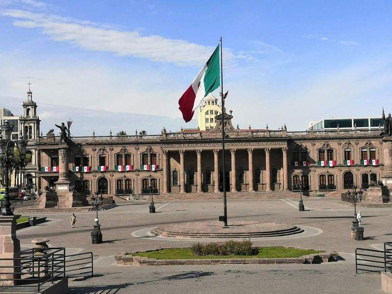
Macroplaza
Macroplaza, located in the heart of Monterrey, Mexico, is a massive public square covering 99 acres and surrounded by landmarks. The plaza features monuments, fountains, and gardens and is flanked by museums and other significant buildings. One of its main attractions is the Faro del Comercio tower which emits a striking green light into the sky at intervals.
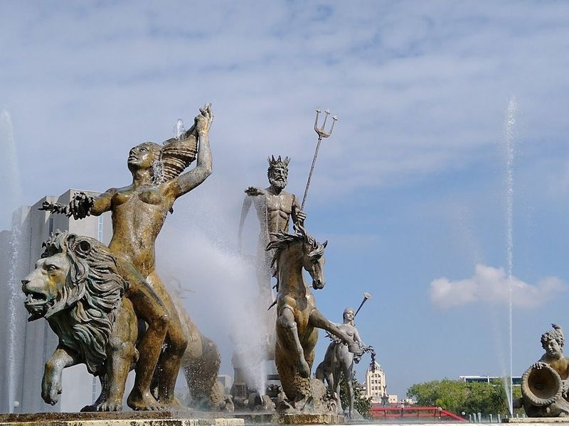
Fuente de Neptuno
Bosque Mágico Coca Cola is an exciting amusement park that offers a variety of classic children's rides, roller coasters, and even a house of horror. In addition to the thrilling attractions, the park is also known for its unique carved tree faces. Whether you're looking for family fun or an adrenaline rush with friends, this amusement park has something for everyone.
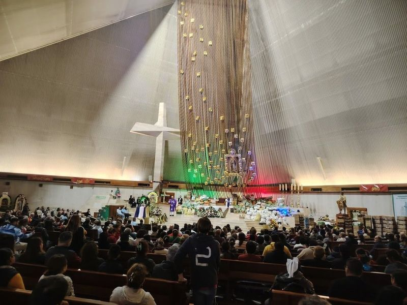
Basilica of Our Lady of Guadalupe
The Basilica of Our Lady of Guadalupe is a beautiful and serene place where people can find peace and calm. The church is especially popular with older people who miss the peace and quiet of Mexico City. The service here is great, and the staff are very friendly.
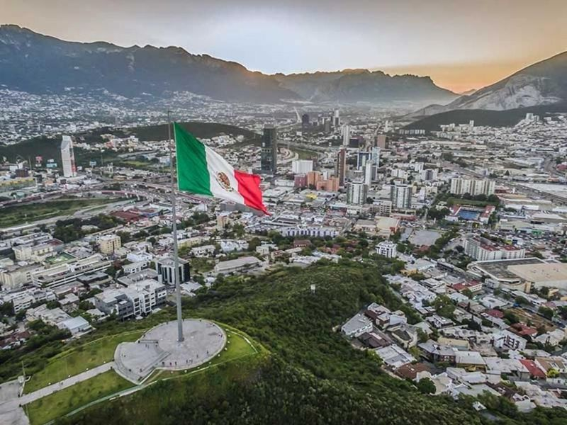
Mirador del obispado
Mirador del Obispado is a hillside lookout offering panoramic views of Monterrey and the surrounding mountains. Located at the top of Cerro del Obispado, it provides a vantage point to admire the city and its majestic mountain backdrop. Visitors can also marvel at the sight of Mexico's largest monumental flag. Accessible by a hike or car, it is recommended to visit during sunset or sunrise for an experience.
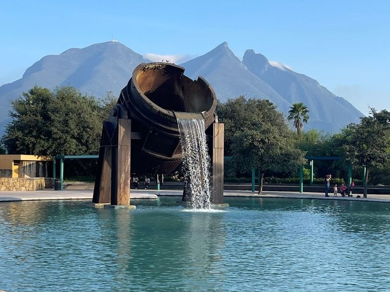
Paseo Santa Lucía
Paseo Santa Lucía is a modern riverside promenade in Monterrey, Mexico, stretching for about 2.5 kilometers along the Santa Lucia River. Built in 2007 as part of a city celebration, it meanders through downtown up to Parque Fundidora. The area is filled with bars, restaurants, and nightlife spots and also houses the Catedral Metropolitana de Monterrey and the Museo de Historia Mexicana.
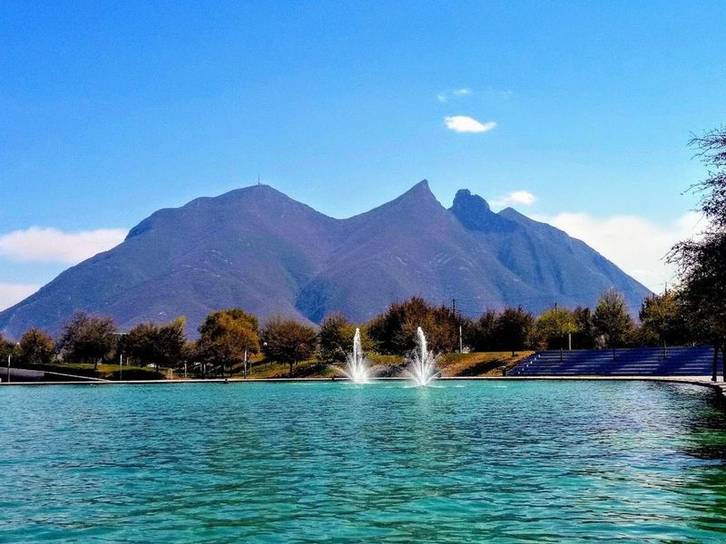
Fundidora Park
Fundidora Park is a public park located in Monterrey, known as the Museum of Industrial Archeology. It offers various amenities such as play areas, walking trails, an arena, and Sesame Street Park for family entertainment. The park also features modern architecture with the Santa Lucia River Walk, a 3km navigable artificial river connecting to Macroplaza by boat.
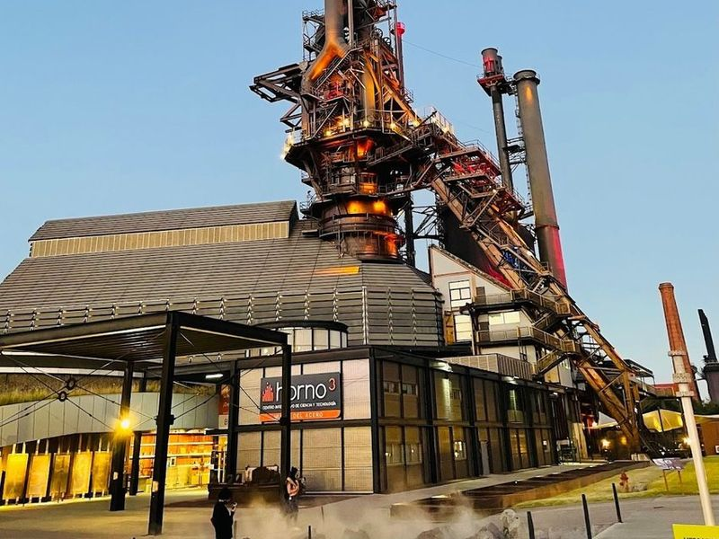
Museo de Acero
Museo del Acero Horno 3 is a science museum located in the Parque Fundidora, housed in the former Blast Furnace No. 3. The museum offers an immersive experience into Mexico's steel industry, showcasing the entire steel-making process and its significance to Monterrey and Mexico. As part of the Fundidora Park, this museum is a testament to the industrial history of Monterrey.
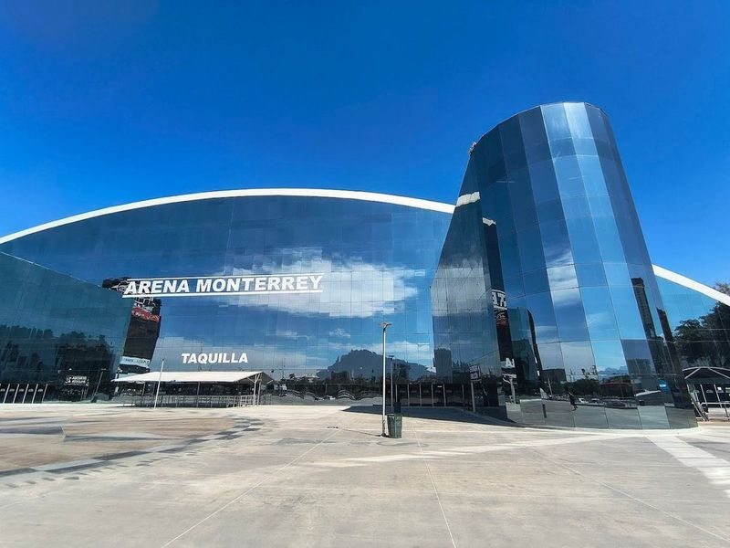
Arena Monterrey
Arena Monterrey is the largest indoor stadium in the city, located within Parque Fundidora. It boasts a striking architectural design and can accommodate 17,599 spectators. The venue hosts a variety of events including sports competitions, cultural performances, conventions, and exhibitions. Renowned artists like Michael Buble, Sam Smith, and Evanescence have graced its stage. Visitors appreciate the easy access to amenities such as food and beverages as well as ample parking options.
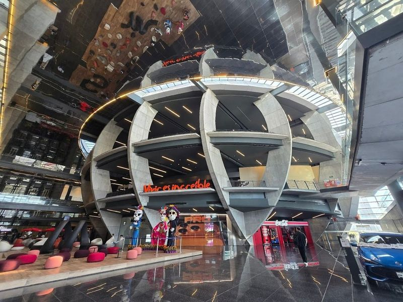
Pabellon M
Pabellon M is a vibrant contemporary shopping complex nestled in the heart of Monterrey, serving as a hub for both locals and visitors alike. This modern venue boasts an impressive array of shops and casual dining options, making it an ideal spot for families and friends to gather. The cinema adds to its allure, providing entertainment for all ages. During special events or concerts, the atmosphere buzzes with excitement, although traffic can become congested.
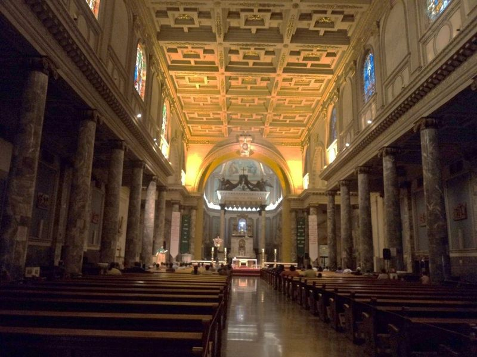
Basílica de Nuestra Señora del Roble
The Basílica de Nuestra Señora del Roble is a significant basilica in Monterrey with a notable bell tower and an intricately designed interior of marble and stained-glass windows. It is admired for its attention to detail, exemplified by the large bronze doors that depict the church's origin story. Although a wedding prevented further exploration, the basilica remains a beautiful and well-preserved historical site.
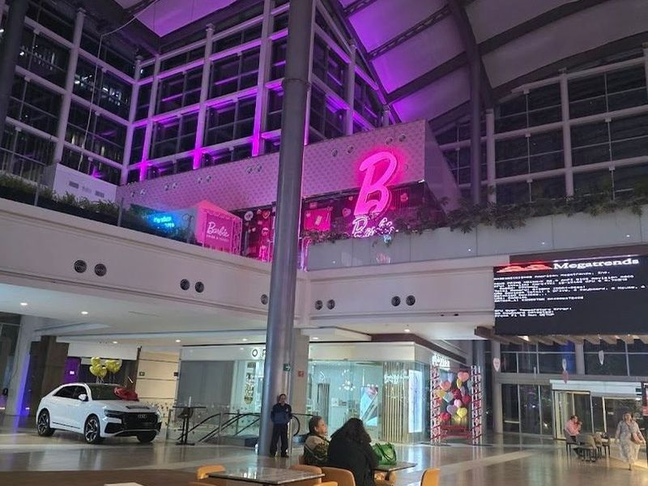
Plaza Fiesta San Agustín
Plaza Fiesta San Agustín is a vibrant shopping haven nestled in the heart of San Pedro Garza García, known for its upscale ambiance and diverse offerings. This mall seamlessly blends high-end global brands with charming local boutiques, making it a go-to destination for fashion enthusiasts. Beyond shopping, visitors can indulge in casual dining options that cater to various tastes, including delightful Mexican cuisine and refreshing gelato.
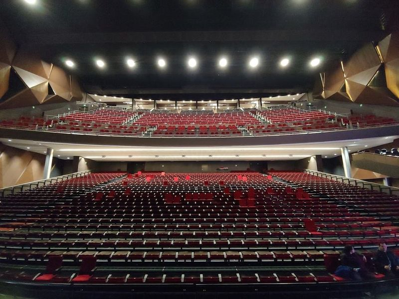
Showcenter Complex
Plaza Fiesta San Agustín is a vibrant shopping haven nestled in the heart of San Pedro Garza García, known for its upscale ambiance and diverse offerings. This mall seamlessly blends high-end global brands with charming local boutiques, making it a go-to destination for fashion enthusiasts. Beyond shopping, visitors can indulge in casual dining options that cater to various tastes, including delightful Mexican cuisine and refreshing gelato.
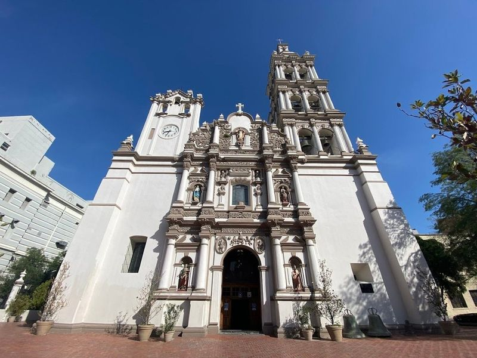
Catedral Metropolitana de Nuestra Señora de Monterrey
The Catedral Metropolitana de Nuestra Señora de Monterrey is a cathedral that showcases a blend of neoclassical and baroque architecture, dating back to the 18th century. Located in the heart of Monterrey, it stands as a significant historical landmark. Despite its construction beginning in 1663 and not being completed until 1899, this grand Catholic church has been in use since 1777.
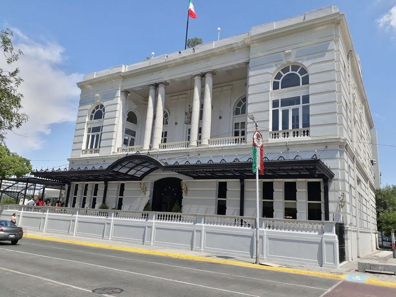
Casino Monterrey
Situated in a prime location near Macroplaza, the Casino Monterrey is a well-known establishment with a rich history that attracts many local players. This casino holds significance as it served as a social hub for residents in the mid-19th century when the city lacked social gathering spaces. Over time, due to the city's growth, there was a need for a centralized venue where people could engage in activities such as dominoes, chess, and card games or simply have conversations.
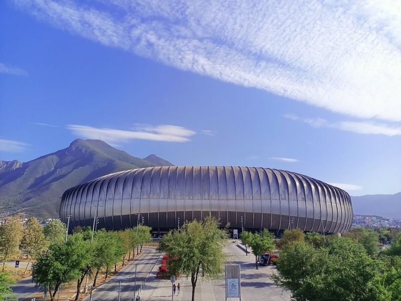
Monterrey Stadium
Estadio BBVA Bancomer is a remarkable soccer venue located in Monterrey, Mexico, serving as the home ground for the local Monterrey Soccer Club. With a seating capacity of 53,500 and an impressive array of amenities including 324 suites and two restaurants, this stadium offers an experience for sports fans and concert-goers alike. During my visit for a Paul McCartney concert, I was pleasantly surprised by how smoothly everything went.
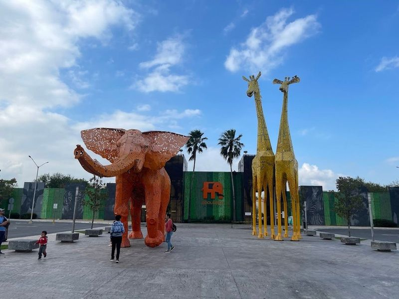
Parque Zoológico La Pastora
Zoológico La Pastora, located within Parque La Pastora in Monterrey, is a popular attraction featuring themed enclosures housing rare species such as jaguars and giraffes. The park itself offers a tranquil retreat with expansive natural surroundings along the La Silla River. With over 300 animals including lamas, tigers, lions, buffalo, macaws, wolves, snakes, flamingos and more, visitors can enjoy taking photos and observing the diverse wildlife.
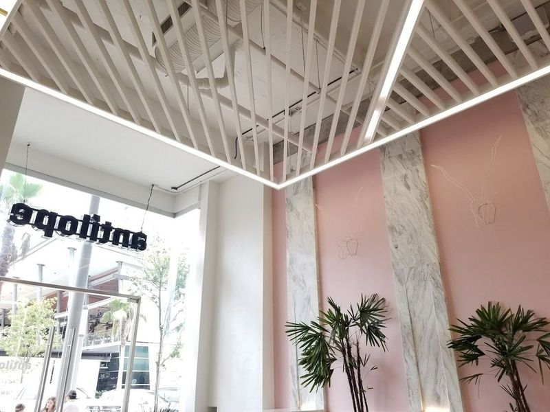
Bosque Mágico Coca Cola
Bosque Mágico Coca Cola is an exciting amusement park that offers a variety of classic children's rides, roller coasters, and even a house of horror. In addition to the thrilling attractions, the park is also known for its unique carved tree faces. Whether you're looking for family fun or an adrenaline rush with friends, this amusement park has something for everyone.
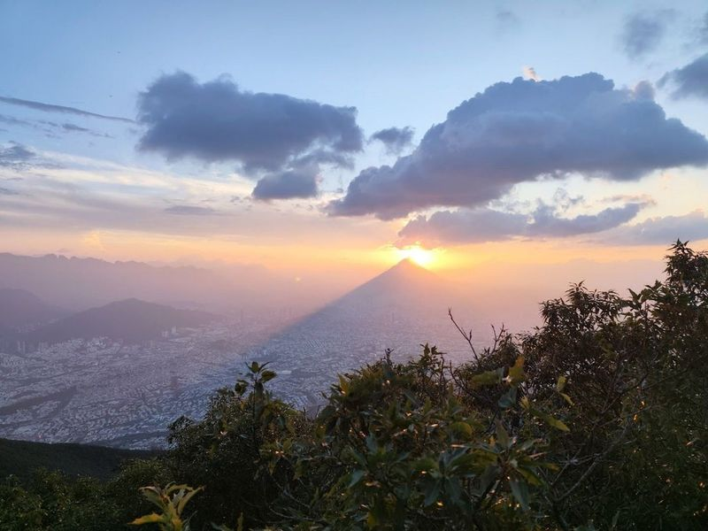
Teleferico and climb to Cerro de la Silla
Teleferico and the climb to Cerro de la Silla offer a challenging hike that is mostly uphill and exposed to the sun. The trail starts outside of the neighborhood, adding an extra 10-minute warm-up walk. Along the way, hikers will reach a platform with great views before continuing on to the peak, which offers amazing panoramic vistas. It's recommended to bring plenty of snacks and water for this 5-9 hour hike.
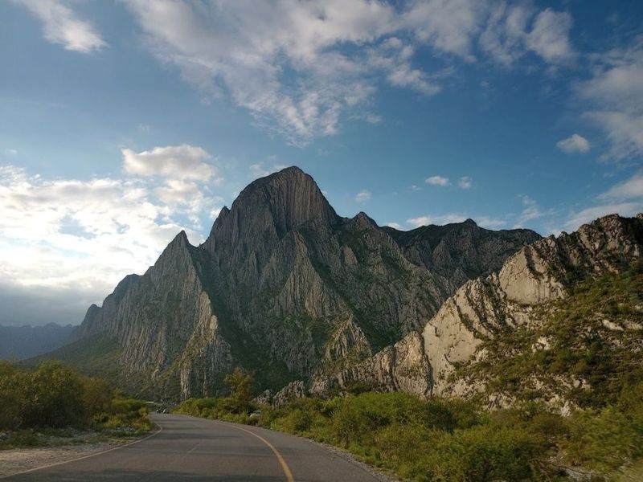
La Huasteca
La Huasteca, located on the border of Coahuila and Nuevo Leon states, offers a subalpine landscape with cooler temperatures, making it an ideal summer hiking destination. The park features challenging ascents that require good physical condition due to its altitude exceeding 3,000 meters. With close to 300 climbing routes available in the area, La Huasteca Canyon is a popular spot for both amateur and experienced climbers.
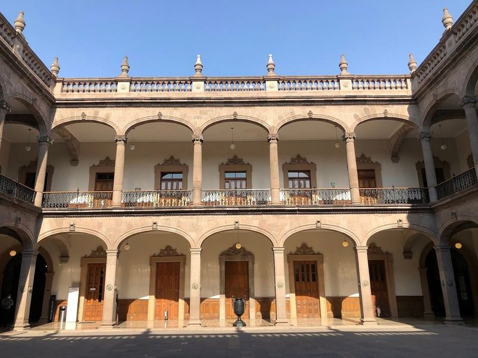
Palacio de Gobierno del Estado de Nuevo León
The Palacio de Gobierno del Estado de Nuevo León is a 19th-century architectural gem that stands proudly at the northern end of Monterrey. Completed in 1908, this ornate building features impressive columns and beautiful stained-glass windows, which come alive with colorful illuminations at night. Once the residence of the state governor, it has been transformed into a captivating museum dedicated to showcasing the rich history of both Nuevo León and its vibrant capital city.
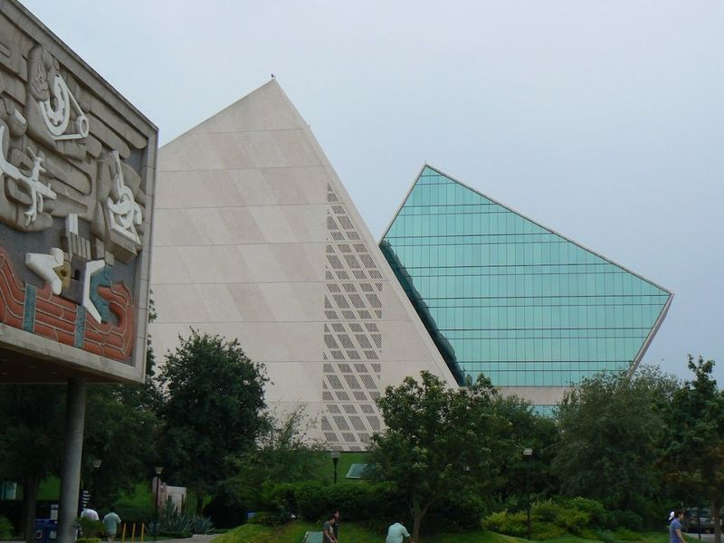
Tecnológico de Monterrey
Tecnológico de Monterrey, established in 1947, offers a wide range of programs including health, business, and engineering. The Eugenio Garza Sada campus is known for its striking architecture set against a backdrop of mountains. It's considered one of the top private universities globally. The main headquarters boasts modern facilities while some areas may appear older due to the university's size and diverse locations.
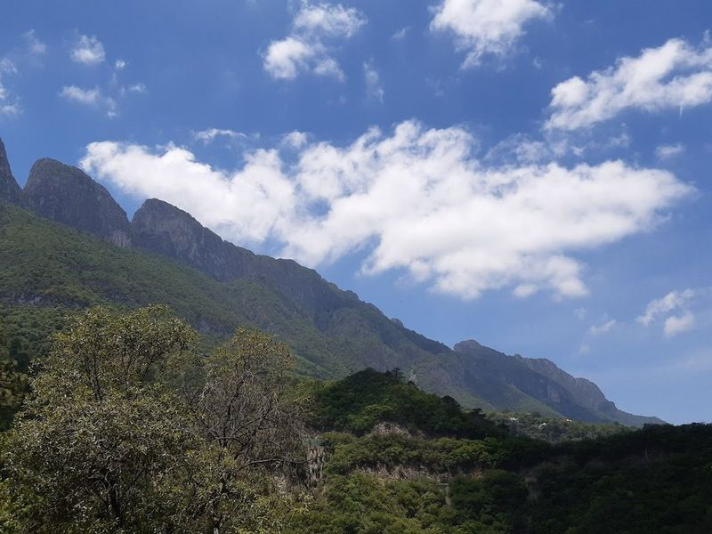
Chipinque A.B.P. Ecological Park
Chipinque A.B.P. Ecological Park is a natural oasis located just 12km from downtown Monterrey, Mexico. This mountainside park offers nearly 80km of trails for hiking and mountain biking through dense forests and rocky peaks, including the highest point, Copete de Aguilas at 2200m. The park also features a museum with interactive exhibits, a butterfly atrium, and an insect house that are perfect for families with kids.
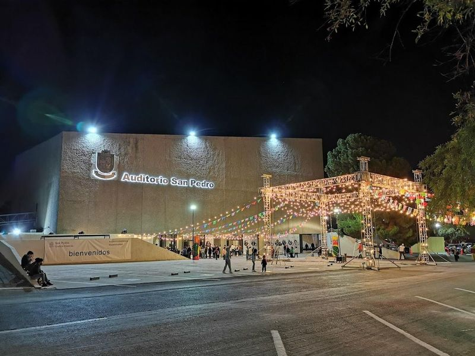
San Pedro Auditorium
San Pedro Auditorium, located in Diego Rivera Park, is parks in San Pedro. The auditorium has undergone renovations since 2020, including new rooms in its basement for storage and rehearsals. It features a spacious theater suitable for professional plays and offers ample parking space. Situated next to a mall with restaurants and a cinema, it provides easy access to amenities.